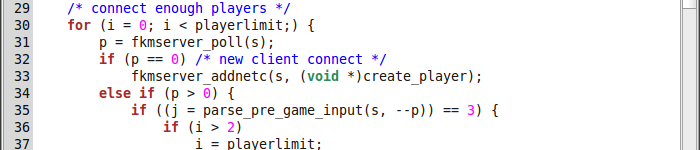
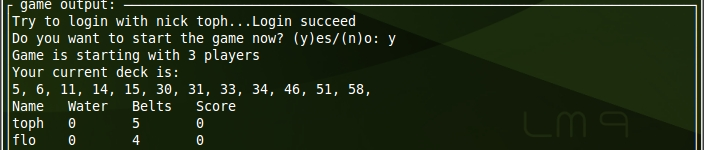
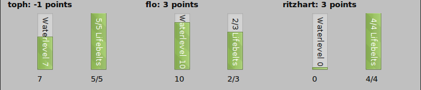
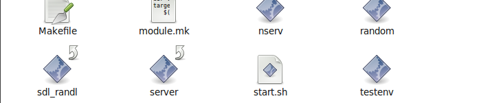

0. What is working at the moment:back to top
- 2 different servers (both implementing the same network protocol, see Appendix A for further details).
- A cli based client using the ncurses library (needs ncurses-dev or the equivalent of your distro to compile).
- A gui client based on python and pyqt4 (which you will need to run it, too)
- A rather stupid AI called the random-ai, a.k.a. ``Randall''
- The same AI but including a somewhat nicer gui hacked together in SDL.
- A nice SDL client without chat-capabilities.
What we still hope to produce is a quality gui client, that might look similar to what you can already see in SDL-Randall, and a master server to keep track of different game servers running all over the net.
To Check progress visit: Our Github-Page
1. The Servers:back to top
The servers can be found in server/old/ and server/new/ respectively. As the name indicates, one of them is the original one, while the other is a rather cleaner and (hopefully) more understandable reimplementation. Both should be functionally equivalent though, and possibly share some bugs, too (they did in the past).
To run any of them just execute the file called ``server'' after make'ing the whole thing (either everything in one run from the top directory, or partially from a subdirectory). The -h switch should tell you about most options, although it is always a good idea to read the code (assuming you know some C) just to see whether anything changed since the usage message string was last updated.
In general, the servers will run port 1337 or anything else you care to #define as PORT bound to any address.
2. The Curses Client:back to top
{kind=link}
The curses client resides in the clients/curses/ subdirectory and requires the curses development headers and (obviously) libcurses to be compiled and run. After make'ing the thing, you can run the ``client'' executable from its directory, it will connect to localhost port 1337 by default, but you can specify another IP and port on the command line.
The curses client supports the complete fkmlandunter protocol, although the implementation of the chat has not been thoroughly debugged as of now.
3. The Python Client:back to top
{kind=link}
The python client to be found in clients/pyqt does not require compiling, but you will of course need python to run it, plus the pyqt4 library. It supports the complete protocol and might be nicer to use than the curses client if you prefer working with guis, but other than that it provides the same basic functionality.
4. The AI:back to top
The only AI we have yet does nothing in any way intelligent, it rather plays any cards it gets in the order they are initially in. It can be compiled and run from clients/ai/random named ``random'' and connects to 127.0.0.1:1337 by default, like all the other clients.
5. The Test Environment:back to top
The test environment in testenv/ was made for stress-testing and checking the servers & AI clients (so only Randall, so far) for deadlocks and other bugs. Just run ``testenv'' with the -h to learn more.
6. The SDL Stuff:back to top

As of now you can find a general gui demo in clients/sdl/ called `gui_test' and an SDL implementation of Randall called `randall'. Be sure to invoke them from the clients/sdl directory, or else fix the #defines in gui_util.h so they can find their graphics. See data/fkmlu/ for supported resolutions. To actually start randall in gui mode, use the -g switch, and to have him play his cards on key-press, so you can see more of the game, use the -i (interactive) switch.
We have also produced a real SDL client, that is already playable, although it has no support for ingame chat or any other advanced features like menus yet. It can also be found in clients/sdl/, just run `client -H' for help.
Appendix A - the fkmlandunter protocol:back to top
- -> LOGIN name
- <- ACK name
- <- JOIN name ****
- -> START
- <- START 3 nam1 nam2 nam3
- <- DECK 1 2 56
- <- RINGS 2 4 1
- <- WEATHER 7 8
- -> PLAY 56
- <- ACK 56
- <- FAIL 56
- <- PLAYEd 1 25 60
- <- WLEVELS 7 8 0
- <- POINTS 1 2 -1
- -> LOGOUT bye
- <- LEAVE name i must go ****
- <- TERMINATE fuck off
------ - -> MSG fu all los0rZ
- <- MSGFROM name fu all los0rZ
Appendix B - Brief Game Description (German)back to top
- Spieleranzahl S von Kommandozeile auswerten, sonst 3;
- S Decks erstellen;
- S Spieler mit Punktzahl 0 erstellen;
- for i = 0 to S
- Wasserstaende 0 setzen;
- Decks zuweisen;
- Den Spielern Decks geben; // Kommunikation
- Spieler auf lebendig setzen;
- Wasserstapel mischen;
- for j = 0 to 12
- Den Spielern neue Wasserkarten zeigen; // Kommunikation
- Eingabe von Spielern lesen solange bis gueltig; //Kommunikation
- Wasserstand der Spieler updaten;
- Spieler mit hoechstem Wasserstand ermitteln und Ring entfernen;
- Spielern neue Wasserstaende mitteilen; // Kommunikation
- Pruefen auf Wasserstand -1 - Spieler als Tot markieren;
- Pruefen ob Anzahl lebender Spieler >= 2
- wenn nicht Runde beenden;
- Spieler mit niedrigstem Wasserstand ermitteln +1 Punkt;
- Wasserstand auf Punktzahl addieren;
- Spielern Punktzahlen mitteilen; // evtl unnoetig ausser f. Markierung
- Platzierung ermitteln;
- Spielern Platzierung mitteilen; // Kommunikation
Installback to top
Take a look at the Main Project Text
Licenseback to top
GPL
Authorsback to top
This whole stuff was produced by three students of Karlruhe Institute of Technology as a leisure-time activity, so don't be surprised when development comes to a halt at times, as we sometimes have exams and other things on our mind - we are doing this far from full time. Our names would be:
- Christoph Gielisch (m0l0t0ph), graphics & gui design
- Florian Kohnhäuser (flozilla), programming, protocol design
- Richard Molitor (gattschardo), programming, protocol design
Downloadback to top
You can download this project in either zip or tar formats.
You can also clone the project with Git by running:
$ git clone git://github.com/fkmsoft/fkmlandunter